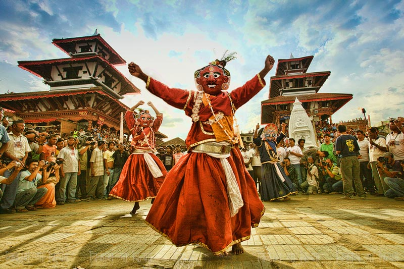

By Aakarshan Dahal
a coding begineer

CULTURE AND TRADITION:
Nepal boasts a diverse and rich cultural heritage, shaped by a blend of indigenous traditions, religious practices, and influences from neighboring countries. The country's culture is deeply rooted in Hindu and Buddhist traditions, and it is characterized by vibrant festivals, art, music, dance, and a unique way of life. Here are key aspects of Nepal's culture:
1. Religious Diversity:
Hinduism and Buddhism: The majority of Nepalese practice Hinduism, and the country is also the birthplace of Lord Buddha, making Buddhism another significant influence. Many cultural practices and festivals are linked to these religions.
2. Festivals:
Dashain and Tihar: Dashain, the longest and the most significant Hindu festival, celebrates the victory of the goddess Durga over the demon Mahishasura. Tihar, the festival of lights, honors various animals, including crows, dogs, and cows.
Holi: The festival of colors is celebrated with enthusiasm, marking the triumph of good over evil.
Indra Jatra: A Kathmandu festival featuring the raising of the Indra pole and the Kumari Jatra, showcasing the living goddess Kumari.
3. Traditional Clothing:
Daura-Suruwal: The traditional male attire includes the Daura, a closed-neck shirt, and Suruwal, tapered trousers. A hat called Dhaka Topi is often worn.
Gunyu Cholo: Traditional female attire includes the Gunyu (sari), Cholo (blouse), and Mantikka (headpiece).
4. Cuisine:
Dal Bhat: A staple dish consisting of lentil soup (dal) served with rice (bhat) and a variety of side dishes.
Momos: Dumplings filled with meat or vegetables, often served with dipping sauces.
Gundruk and Dhido: Fermented leafy greens and buckwheat-based staple, respectively.
5. Art and Architecture:
Temples and Stupas: Nepal is known for its ancient temples and stupas, such as Swayambhunath (Monkey Temple) and Pashupatinath. The architecture reflects a blend of Hindu and Buddhist styles.
Thangka Painting: Traditional scroll paintings often depicting religious themes or mandalas.
6. Music and Dance:
Traditional Music: Instruments like the sitar, tabla, and flute are common in traditional Nepali music.
Dances: Various traditional dances, such as the Lakhe dance and Maruni dance, are performed during festivals.
7. Languages:
Nepali: The official language and lingua franca.
Other Languages: Numerous ethnic groups have their own languages, contributing to the linguistic diversity.
8. Living Goddess Kumari:
Kumari: A prepubescent girl selected as the living goddess in Kathmandu. She makes occasional public appearances during religious and cultural events.
9. Mountaineering and Adventure:
Mount Everest: Nepal is home to eight of the world's 14 highest peaks, attracting mountaineers and trekkers from around the globe.
10. Cultural Heritage Sites:
UNESCO World Heritage Sites: Nepal has several UNESCO-listed sites, including the Kathmandu Valley, Lumbini, and Chitwan National Park.
Nepal's culture is incredibly diverse, reflecting the country's complex history and the harmonious coexistence of various ethnicities and traditions. The cultural landscape is continually evolving, with traditional practices blending with modern influences.